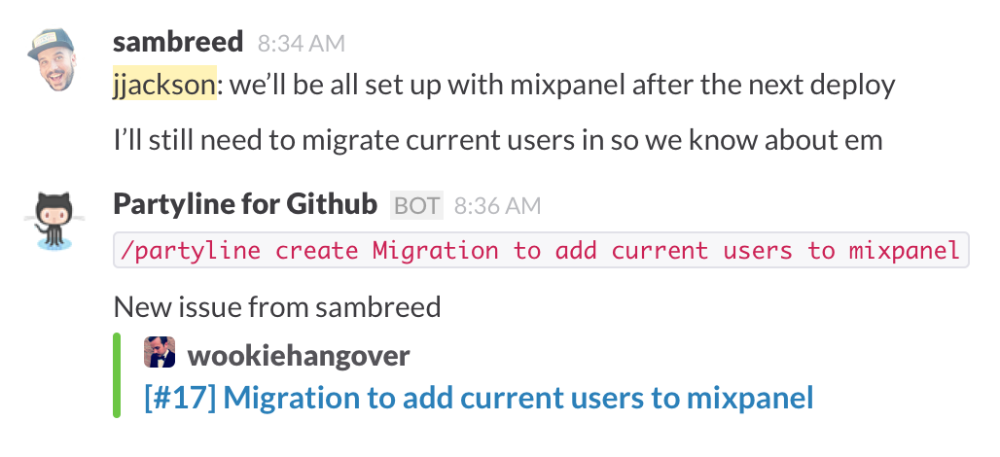
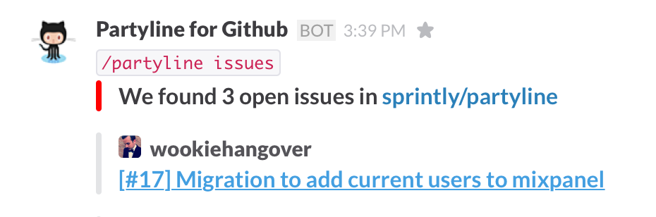

A tool that manages GitHub Issues from Slack
Increasingly, there are only three things I have open on my desktop:
- Slack
- Text editor
- Terminal
Slack is the pulse of our organization. We discuss new feature ideas. We have incoming notifications, like tweets, that automatically alert us if there's a bug in our software. We make plans.
But sometimes Slack can feel like a walled garden. It's great at pulling in notifications. It's great for conversation. But it's not great for pushing out action based on those inputs. If I want to react immediately, I have to use another tool.
Our team was tired of that. We think about Slack like a command center, or a command line. With /slash commands we want to be able to control things outside of Slack. The most common action after a conversation was:
"Let's file a ticket for that."
So we built Partyline.
Partyline allows teams to create, delete, and manage project tickets from Slack. Currently it connects to GitHub Issues and Sprintly. Here's what it looks like when you create a ticket:

This system doesn't disrupt your flow. You don't need to open a browser, log in, choose your project, click "Add item", fill out the details, save it, go back to Slack and say:
"I created a ticket."
Instead, with one simple /partyline command you create your ticket in the context of your Slack chat. Everyone in the channel gets notified. Now, team members can move on or, if they wish, click the link and add more details.
We also wanted Partyline to feel like you were asking your Project Manager questions. For example, using /partyline issues is like asking "GitHub, what open issues are in this repo?"

What else can you do with Partyline?
- Close an issue or pull request.
- List or edit an issue.
- List open pull requests.
- List available repo labels.
- List repo milestones.
You can also do more detailed item creation like this:
/github create Modal not closing
description:when I click 'cancel', the modal doesn't close
assignee:wookiehangover
label:bug
milestone:1
(You can see a full list of GitHub Issues commands here)
We agree with Ben Brown when he says:
Slack is more than just a chat room. Slack is an operating system for a whole new class of apps. These apps will use Slack as their primary user interface, and thus be available on all platforms. They'll provide a consistent, friendly, conversational interface. And they'll do things in subtly different ways than we're used to, creating opportunities for time and cost savings, better communication and transparency, and a host of other benefits.
Our team has been using Partyline for over a month, and it feels like the future. Using Slack speeds up our interaction with apps (like using the command line) but within a social context (like IRC). It's the best of both worlds.
Try Partyline with your team and let us know what you think!
If you're interested in a technical overview of how we built Partyline, check out: How to build your own Slack integration